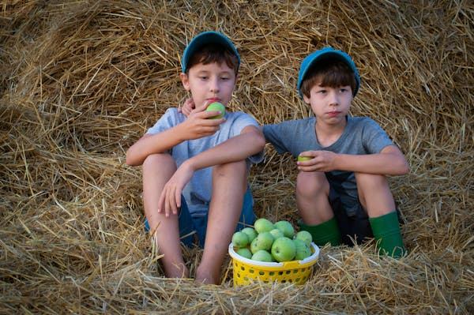

| nimapandit448@gmail.com + 91 9714937432 | |||
| Home Products About Contact | |||
|  |
When we think about the Mango, we picture summertime, wherever we are. A tropical fruit, the mango is loved by both kids and adults! Generally oval in shape, the skin colour varies from green, yellow to even red. Now, writing about this beloved fruit is a task that most kids will love to do, as it’s something they’ve craved all year long, and it’s much easier, thanks to actually being able to experience the fruit during the summer months. Let’s begin exploring the thought of writing on this lovely topic. King Of Gir lion And Fruit King Of Mangoe.I Like-I Love Mangoes.It is orgenic Mangoes-Talala(gir).The gir kesher managoes is best webside. |
||
|
|
|||